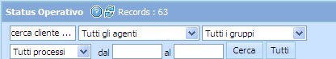

TIPOLOGIA DEI FILTRI
----------------------------------------------------------
I filtri previsti sono ricerca per:
§ Nome
§ Assegnazione
§ Qualifica
§ Provincia
Ricordiamo che i filtri inseriti sono di tipo AND (e), quindi quanti più filtri verranno impostati tanto
maggiore è la possibilità di restringere il numero di records visualizzati.
L'icona  attiva la ricerca
impostata.
attiva la ricerca
impostata.